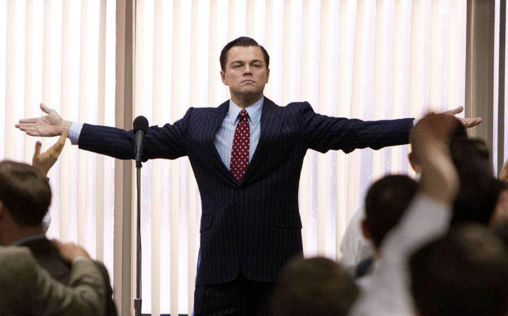

08 / The end
So...
did I get your attention?
You asked for a story. I tried to make mine worth scrolling through.
But Farah Khaled said they're hiring, and you asked for my story. So I had a small problem: how do I make a CV feel less like a CV?
Business Administration graduate with hands-on experience across business development, marketing, operations, events and business intelligence.
Basically, I have collected enough job titles to make LinkedIn slightly confused.
I like the moment when the brief is messy, the answer isn't obvious, and someone says: "So... what do we do now?"
That's usually when I stop being confused and start becoming useful.
Analyzed sales, marketing, product and competitor data, built competitive analysis, supported launches, partnerships and campaign execution, and developed business problem frameworks.
Turned client requirements into proposals and internal briefs, coordinated designers, production and suppliers, handled client communication and supported B2B acquisition.
Researched potential demand, built B2B prospect lists, presented product value, managed follow-ups and developed sales opportunities for a new product line.
Worked across R&D, fundraising, marketing, logistics, graphic design, presentation and training, and mentored Solera through BMC, budgeting and presentation preparation.
Figure out what is actually broken before jumping into solutions.
If I don't know something, I learn enough to move the problem forward.
Turn research into an idea, process, proposal, framework or execution.
Farah Khaled's hiring post is what brought me to this application. What made it more interesting was remembering the story she shared about joining MO4 through a creative email, after a hiring post that already had a meme in it.
That made the usual "CV + cover letter" route feel a little too predictable. So instead of only telling MO4 that I like creative problem solving, I decided to make the application itself a small example of it.
Which is exactly why I built one.
The problem was simple: "How do I show up differently without pretending to be someone I'm not?"
So I learned what I needed, built the thing, and kept going until it worked.
Don't confuse the brief with the real problem.
Get the missing knowledge instead of waiting.
Turn the idea into something people can actually use.
Fix what isn't working and ship it.
I'm not applying as a web developer, and I'm not trying to sell myself as a full-time creative just because the website looks cool.
I'm applying as someone who likes understanding businesses, people and problems, then working with the right people to turn ideas into something real.
And if Farah's post was the door, I figured I should at least knock in a way that makes a little noise.

You asked for a story. I tried to make mine worth scrolling through.